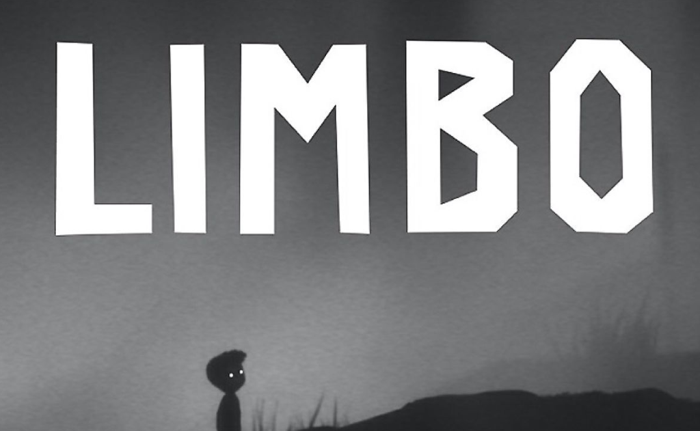
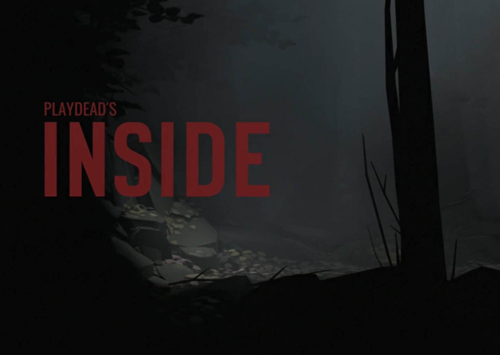

《Limbo》是一款由丹麦的独立工作室PlayDead Studios制作的动作解谜游戏，它同时也是今年Independent Games Festival最佳美术与最佳技术奖项的得主。
《Limbo》是一款由丹麦的独立工作室PlayDead Studios制作的动作解谜游戏，它同时也是今年Independent Games Festival最佳美术与最佳技术奖项的得主。

《Inside》是我们期待已久的Playdead出品的又一力作，它的前10分钟在美妙、魔性和恐怖之间变来变去，有的时候会让这三种感觉同时袭来。
《Inside》是我们期待已久的Playdead出品的又一力作，它的前10分钟在美妙、魔性和恐怖之间变来变去，有的时候会让这三种感觉同时袭来。

《The Long Dark》是一款充满思考的第一人称生存游戏，在一场大灾难之后。玩家在探索求生的同时还需时时监控自己的生命体征，包括卡路里，体温，疲劳，饥饿。